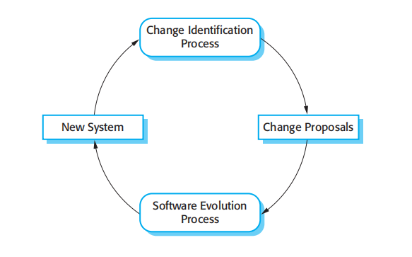
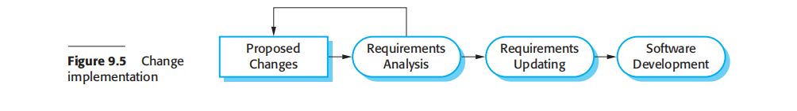
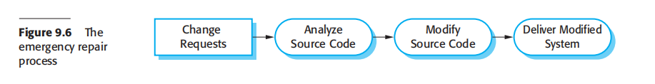

<!DOCTYPE html>
<html lang="en">
<head>

    <meta charset="UTF-8">
    <meta name="viewport" content="width=device-width, initial-scale=1.0">
    <link rel="stylesheet" href="css/home-footer.css">
    <title>Home</title>
</head>
    <h1>Chapter 9 Software evolution</h1>
    <nav>
        <a href="9.1">Evolution processes</a>
        <a href="9.2 index.html">Program evolution dynamics</a>
        <a href="9.3">Software maintenance</a>
        <a href="index.html">Legacy system management</a>
    </nav>
<body>
    <main>
        <article>
            <p>Software development does not stop when a system is delivered but continues
throughout the lifetime of the system. After a system has been deployed, it inevitably
has to change if it is to remain useful. Business changes and changes to user expectations generate new requirements for the existing software. Parts of the software
may have to be modified to correct errors that are found in operation, to adapt it for
changes to its hardware and software platform, and to improve its performance or
other non-functional characteristics.</p>
            <p>Software evolution is important because organizations have invested large
amounts of money in their software and are now completely dependent on these systems. Their systems are critical business assets and they have to invest in system
change to maintain the value of these assets. Consequently, most large companies
spend more on maintaining existing systems than on new systems development.
Based on an informal industry poll, Erl.ikh (2000) suggests that 85–90% of organizational software costs are evolution costs. Other surveys suggest that about two-thirds
of software costs are evolution costs. For sure, the costs of software change are a
large part of the IT budget for all companies</p>
            <p>Software evolution may be triggered by changing business requirements, by
reports of software defects, or by changes to other systems in a software system’s
environment. Hopkins and Jenkins (2008) have coined the term ‘brownfield software
development’ to describe situations in which software systems have to be developed
and managed in an environment where they are dependent on many other software
systems.</p>
            <p>Therefore, the evolution of a system can rarely be considered in isolation.
Changes to the environment lead to system change that may then trigger further
environmental changes. Of course, the fact that systems have to evolve in a ‘systemsrich’ environment often increases the difficulties and costs of evolution. As well as
understanding and analyzing an impact of a proposed change on the system itself,
you may also have to assess how this may affect other systems in the operational
environment.</p>
            <p>Useful software systems often have a very long lifetime. For example, large military or infrastructure systems, such as air traffic control systems, may have a lifetime
of 30 years or more. Business systems are often more than 10 years old. Software
cost a lot of money so a company has to use a software system for many years to get
a return on its investment. Obviously, the requirements of the installed systems
change as the business and its environment change. Therefore, new releases of the
systems, incorporating changes, and updates, are usually created at regular intervals.</p>
            <p>You should, therefore, think of software engineering as a spiral process with
requirements, design, implementation, and testing going on throughout the lifetime
of the system (Figure 9.1). You start by creating release 1 of the system. Once delivered, changes are proposed and the development of release 2 starts almost immediately. In fact, the need for evolution may become obvious even before the system is
deployed so that later releases of the software may be under development before the
current version has been released.</p>
            <p>This model of software evolution implies that a single organization is responsible
for both the initial software development and the evolution of the software. Most packaged software products are developed using this approach. For custom software,
a different approach is commonly used. A software company develops software for a
customer and the customer’s own development staff then take over the system. They
are responsible for software evolution. Alternatively, the software customer might
issue a separate contract to a different company for system support and evolution.</p>
            <p>In this case, there are likely to be discontinuities in the spiral process. Requirements
and design documents may not be passed from one company to another. Companies
may merge or reorganize and inherit software from other companies, and then find
that this has to be changed. When the transition from development to evolution is not
seamless, the process of changing the software after delivery is often called ‘software maintenance’. As I discuss later in this chapter, maintenance involves extra
process activities, such as program understanding, in addition to the normal activities of software development</p>
            <p>Rajlich and Bennett (2000) proposed an alternative view of the software evolution
life cycle, as shown in Figure 9.2. In this model, they distinguish between evolution
and servicing. Evolution is the phase in which significant changes to the software
architecture and functionality may be made. During servicing, the only changes that
are made are relatively small, essential changes.</p>
            <p>During evolution, the software is used successfully and there is a constant stream
of proposed requirements changes. However, as the software is modified, its structure tends to degrade and changes become more and more expensive. This often happens after a few years of use when other environmental changes, such as hardware
and operating systems, are also often required. At some stage in the life cycle, the
software reaches a transition point where significant changes, implementing new
requirements, become less and less cost effective.</p>
            <p>Figure 9.1 A spiral
model of development
and evolution</p>
            <div></div>
            <p>Figure 9.2 Evolution
and servicing</p>
            <div></div>
            <p>Figure 9.3 Change
identification and
evolution processes</p>
            <div></div>
            <p>At that stage, the software moves from evolution to servicing. During the servicing phase, the software is still useful and used but only small tactical changes are
made to it. During this stage, the company is usually considering how the software
can be replaced. In the final stage, phase-out, the software may still be used but no
further changes are being implemented. Users have to work around any problems
that they discover.</p>
        </article>
        

        <article>
            <h2>9.1 Evolution processes</h2>
            <p>Software evolution is a complex activity that involves many different process vary depending on the type of software being maintained, the development processes used in an organization and the skills of the people involved. In some organizations, evolution may be an informal process where
change requests mostly come from conversations between the system users and
developers. In other companies, it is a formalized process with structured documentation produced at each stage in the process
            <p>tion produced at each stage in the process.
System change proposals are the driver for system evolution in all organizations.
Change proposals may come from existing requirements that have not been implemented in the released system, requests for new requirements, bug reports from system
stakeholders, and new ideas for software improvement from the system development
team. The processes of change identification and system evolution are cyclic and
continue throughout the lifetime of a system (Figure 9.3).</p>
            <p>Change proposals should be linked to the components of the system that have to
be modified to implement these proposals. This allows the cost and the impact of the
change to be assessed. This is part of the general process of change management,
which also should ensure that the correct versions of components are included in
each system release. I cover change and configuration management in Chapter 25</p>
            <p>Figure 9.4 The
software evolution
proces</p>
            <div>    </div>
            <p>Figure 9.4, adapted from Arthur (1988), shows an overview of the evolution process.
The process includes the fundamental activities of change analysis, release planning,
system implementation, and releasing a system to customers. The cost and impact of
these changes are assessed to see how much of the system is affected by the change and
how much it might cost to implement the change. If the proposed changes are accepted,
a new release of the system is planned. During release planning, all proposed changes
(fault repair, adaptation, and new functionality) are considered. A decision is then made
on which changes to implement in the next version of the system. The changes are
implemented and validated, and a new version of the system is released. The process
then iterates with a new set of changes proposed for the next release.</p>
            <p>You can think of change implementation as an iteration of the development
process, where the revisions to the system are designed, implemented, and tested.
However, a critical difference is that the first stage of change implementation may
involve program understanding, especially if the original system developers are not
responsible for change implementation. During this program understanding phase,
you have to understand how the program is structured, how it delivers functionality,
and how the proposed change might affect the program. You need this understanding
to make sure that the implemented change does not cause new problems when it is
introduced into the existing system.</p>
            <p>Ideally, the change implementation stage of this process should modify the system specification, design, and implementation to reflect the changes to the system
(Figure 9.5). New requirements that reflect the system changes are proposed, analyzed, and validated. System components are redesigned and implemented and the
system is retested. If appropriate, prototyping of the proposed changes may be carried out as part of the change analysis process.</p>
            <p>During the evolution process, the requirements are analyzed in detail and implications of the changes emerge that were not apparent in the earlier change analysis
process. This means that the proposed changes may be modified and further customer discussions may be required before they are implemented.
Change requests sometimes relate to system problems that have to be tackled
urgently. These urgent changes can arise for three reasons:</p>
            <ol> 1.If a serious system fault occurs that has to be repaired to allow normal operation
to continue.</ol>
            <p>Figure 9.5 Change
implementation</p>
            <div></div>
            <p>Figure 9.6 The
emergency repair
process</p>
            <div></div>
            <ol>2. If changes to the systems operating environment have unexpected effects that
disrupt normal operation.</ol>
            <ol>3. If there are unanticipated changes to the business running the system, such as
the emergence of new competitors or the introduction of new legislation that
affects the system.</ol>
            <p>In these cases, the need to make the change quickly means that you may not be
able to follow the formal change analysis process. Rather than modify the requirements and design, you make an emergency fix to the program to solve the immediate problem (Figure 9.6). However, the danger is that the requirements, the software
design, and the code become inconsistent. Although you may intend to document
the change in the requirements and design, additional emergency fixes to the software may then be needed. These take priority over documentation. Eventually, the
original change is forgotten and the system documentation and code are never
realigned.</p>
            <p>Emergency system repairs usually have to be completed as quickly as possible.
You chose a quick and workable solution rather than the best solution as far as system structure is concerned. This accelerates the process of software ageing so that
future changes become progressively more difficult and maintenance costs increase.</p>
            <p>Ideally, when emergency code repairs are made the change request should remain
outstanding after the code faults have been fixed. It can then be reimplemented more
carefully after further analysis. Of course, the code of the repair may be reused. An
alternative, better solution to the problem may be discovered when more time is
available for analysis. In practice, however, it is almost inevitable that these improvements will have a low priority. They are often forgotten and, if further system
changes are made, it then becomes unrealistic to redo the emergency repairs.</p>
            <p>Agile methods and processes, discussed in Chapter 3, may be used for program
evolution as well as program development. In fact, because these methods are based
on incremental development, making the transition from agile development to postdelivery evolution should be seamless. Techniques such as automated regression testing
are useful when system changes are made. Changes may be expressed as user stories
and customer involvement can prioritize changes that are required in an operational
system. In short, evolution simply involves continuing the agile development process.</p>
            <p>However, problems may arise in situations in which there is a handover from a
development team to a separate team responsible for evolution. There are two potentially problematic situations:</p>
            <ol>1. Where the development team has used an agile approach but the evolution team
is unfamiliar with agile methods and prefers a plan-based approach. The evolution team may expect detailed documentation to support evolution and this is
rarely produced in agile processes. There may be no definitive statement of the
system requirements that can be modified as changes are made to the system.</ol>
            <ol>2. Where a plan-based approach has been used for development but the evolution
team prefers to use agile methods. In this case, the evolution team may have to
start from scratch developing automated tests and the code in the system may
not have been refactored and simplified as is expected in agile development. In
this case, some reengineering may be required to improve the code before it can
be used in an agile development process.</ol>
            <ol>Poole and Huisman (2001) report on their experiences in using Extreme Programming
for maintaining a large system that was originally developed using a plan-based
approach. After reengineering the system to improve its structure, XP was used very
successfully in the maintenance process</ol>
        </article>
    </main>
</body>

<footer>
    <section>
        <p>&copy; 2025 Software Evolution. All rights reserved.</p>
        <p>Contact: Gonzales, Riosa, Codizal, Villalobos</p>
    </section>
</footer>

</html>